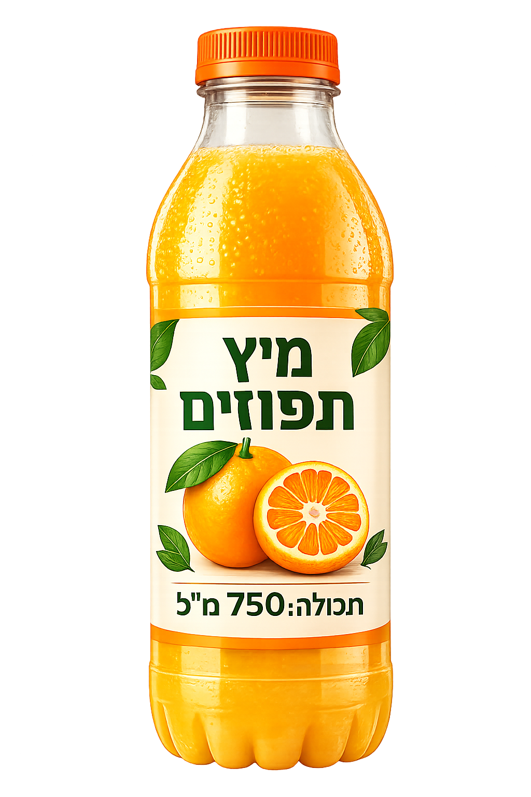

كل الاحترام!
إذا لم تنجحوا في الإجابة عن بعض الأسئلة،
فمن المهم أن تفهموا ما الذي لا يزال غير واضح، وأن تتوجهوا إلى الدردشة أو إلى المعلّم للحصول على شرح إضافي.
يحتوي السؤال على 4 بنود.
عليكم الإجابة عن 3 بنود على الأقل بشكل صحيح لتتمكّنوا من التقدّم.

تنتج شركة مشروبات مئات قناني العصير المكتوب على ملصقاتها - المحتوى: 750 ملل.
وفق المعيار، يتراوح حجم العصير المسموح به في القنينة بين 735 و-765 ملل.
اختار قسم الاستهلاك 8 قناني في المصنع، وقاس حجم العصير في كل قنينة:
| رقم القنينة | حجم العصير في القنينة (بالمليلتر) |
|---|---|
| 1 | 745 |
| 2 | 752 |
| 3 | 748 |
| 4 | 760 |
| 5 | 749 |
| 6 | 755 |
| 7 | 747 |
| 8 | 754 |
مهمتكم: اكتشاف كيفية فحص ما إذا كانت الشركة تلتزم بالمعيار، وما هي نتيجة الفحص.
البند أ
نتائج قياس حجم العصير في القناني المختلفة بالملل:
745، 752، 748، 760، 749، 755، 747، 754
البند ب
البند ج
تدعي شركة المشروبات أنها تلتزم بالمعيار.
أيٌّ من الجمل التالية تعرض ادّعاءً علميًا صحيحًا وكاملًا يدعم ادعاء الشركة؟
البند ت
يدعي أمجد أنه يجب قياس حجم العصير في جميع القناني.
ما رأيكم؟